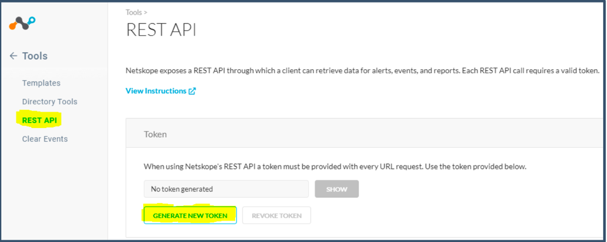
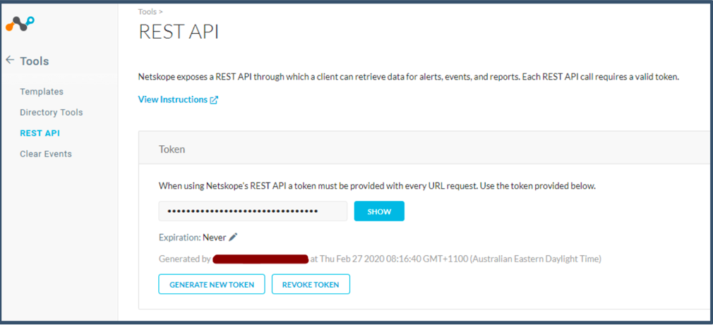
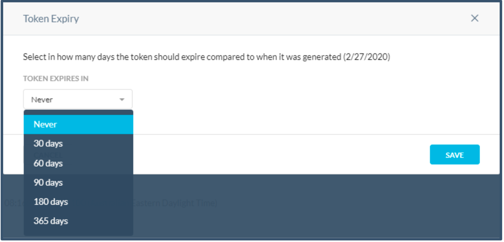
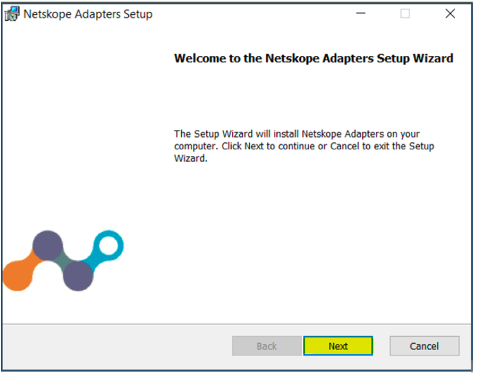
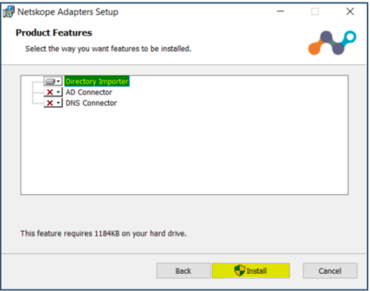
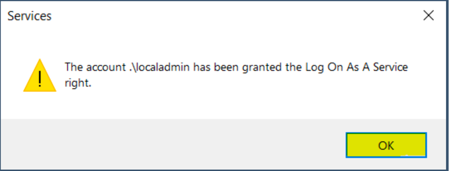
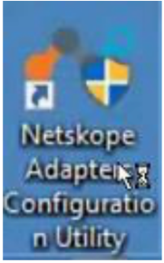

Install the Netskope Directory Importer
Generate a REST API token from the Netskope tenant. Go to Settings > Tools > REST API and click Generate New Token.
 Click Generate.

Refresh the page to view the generated token.
 You have the option to set Token Expiry. Keep the default value Never.
 Important
If token expiry is set for an amount of time, then after expiry a new token needs to be generated. The Token is used in AD Importer and REST API calls to download events, which will stop working on token expiry until new token details has been generated and updated in AD Importer and REST API configurations.
Download the Directory Importer tool from the Netskope tenant. Go to Settings > Tools > Directory Tools and on the On-Prem Integration tab click Download Tools.
Also copy the Addon URL, which is required to configure the Directory Importer.

Login to the Windows device with local admin credentials.
Install Microsoft Visual C++ 2010 SP1 Redistributable package (x64).
Launch the
NSAdapters.msifile to install Netskope Directory Importer. When the setup wizard opens, click Next. Leave the username and password blank and click Next.
Select Directory Importer and click Install.
 Click Finish
Launch
Services.msc.Right-click Netskope Directory Importer Service and select Properties.
Select the Log On Tab and clickBrowse. Search for the local user administrator account.
Enter the password and click Apply.

This will register the local admin account with the Log On as a Service privilege. Click OK and close the services console.
 The Netskope Adapter Configuration Utility icon gets created on the desktop.
